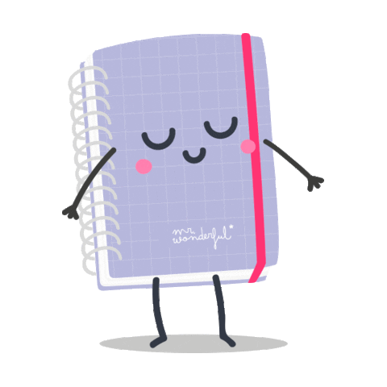

<div class="container-content d-flex flex-column align-items-center mx-auto">
  <div class="header w-100 col-12 d-flex flex-column align-items-center mx-auto">
    <h1 class="title mx-auto">Minhas Tarefas</h1>
  </div>
  <div class="container-fluid">
    <div class="row align-items-center mx-auto">
      <div class="col-sm-6 col-lg-8">
        
        <h5>Anote suas tarfas do dia-a-dia e relembre o que tem que fazer no seu dia.</h5>
      </div>
      <div class="col-sm-6 col-lg-4">
        <div class="p-1 mt-3 row w-100% d-flex justify-content-between flex-wrap">
          <button-redirect-material class="p-3 d-flex justify-content-center align-items-center"
            [url]="['/login']"
            [value]="'LOGIN'"
            bgColor="#154580"
            textColor="#FFF"
            [height]="70"
            width="100">
          </button-redirect-material>
          <button-redirect-material class="p-3 d-flex justify-content-center align-items-center"
            [url]="['/cadastro']"
            [value]="'CADASTRE-SE'"
            bgColor="#0b294f"
            textColor="#FFF"
            [height]="70"
            width="100">
          </button-redirect-material>
        </div>
      </div>
    </div>
  </div>
</div>
<footer class="footer p-12">
  <small class="TextoCopyright ff-inter">
    &copy;
    2022 IFSP - Araraquara 
    <a class="link" href="https://github.com/ArthurVaso" target="_blank">Arthur</a> 
    e 
    <a class="link" href="https://github.com/Jun27-max" target="_blank">Júnior</a>
    . Todos os direitos reservados.
  </small>
</footer>
